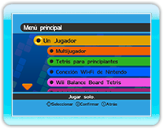

Estos son los modos
disponibles para Tetris
Party:
● Un jugador
Tetris para un jugador,
con 5 reglas diferentes.
● Multijugador
Tetris de 2 a 4 jugadores (incluyendo la
máquina), con 7 reglas diferentes.
● Tetris para principiantes
Tetris para principiantes con un jugador, usando Tetriminos simples. Sólo tiene 1 regla.
● Conexión Wi-Fi de Nintendo
Enfréntate a amigos o jugadores de todo el
mundo mediante la Conexión Wi-Fi de Nintendo. También puedes competir en torneos y consultar la información de los torneos.
● Wii Balance Board Tetris
Tetris para Un jugador usando la Wii Balance Board, con 3 reglas diferentes.
● Administración de datos
Te permite borrar datos creados o crear datos nuevos.
● Tutorial
Modo tutorial, para ver las reglas básicas y cómo jugar a Tetris.
● Récords
Puedes comprobar récords individuales y
resultados. También puedes ver la Clasificación mundial si te conectas a la Conexión Wi-Fi de Nintendo.
● Opciones
Te permite ajustar la configuración del juego.